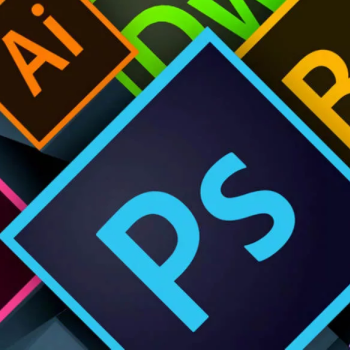
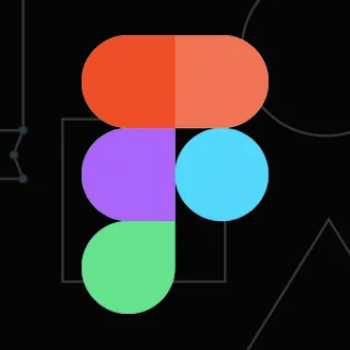

Mi Motivación
Mi motivación nace de un lugar de introspección y vulnerabilidad. Para mí, el diseño no es solo un trabajo, es una forma de procesar mi "invierno emocional". Es en la quietud y la frialdad donde encuentro la fuerza para observar el mundo con un lente único. Mi resiliencia me impulsa a no rendirme en el proceso creativo, y mi propósito es tomar esa experiencia personal para transformarla en algo significativo. Lo que me mueve es la idea de que, a través de mis proyectos, puedo florecer y contar historias que, al igual que yo, esperan el momento de renacer.

Mis amigos han sido un apoyo fundamental en este proceso. Cuando mis ideas se sentían vulnerables, su confianza fue el calor que me ayudó a seguir. Su compañía me ha demostrado que la verdadera fortaleza se nutre de las personas que creyeron en mí en mis propios momentos de oscuridad.
Mi Universidad
Para mí, la Universidad Católica Boliviana no es solo una institución de enseñanza, es un espacio de introspección y crecimiento. En sus aulas, he aprendido que el diseño va más allá de la estética; es un proceso que requiere resiliencia y una búsqueda constante de propósito. Es aquí donde mis ideas, a veces frágiles y frías, encuentran el entorno necesario para florecer y formarse para los nuevos comienzos que me esperan en el mundo profesional.
Mis Influencias
Mis influencias se nutren de las personas que me han guiado en este camino. En la Universidad, Camila, de Taller de Diseño Gráfico 3, me enseñó la resiliencia. Me mostró que el diseño es un proceso de persistencia y que, incluso cuando las ideas se sienten frágiles, hay que defenderlas. Por otro lado, Ed, de Programas de Diseño 2, me hizo ver que las herramientas son solo un medio. Él me impulsó a encontrar un propósito en cada proyecto, a utilizar la tecnología para crear diseños que realmente importen a las personas. Gracias a ellos, he aprendido que la fuerza de un diseño no solo reside en su belleza, sino en la historia que cuenta y en la razón por la que fue creado.
Herramientas Útiles
Mis Habilidades con Adobe

Mis habilidades con los paquetes de Adobe son una parte fundamental de mi proceso creativo. Con el tiempo, he aprendido a dominar estas herramientas para dar forma y propósito a mis ideas más frágiles. Utilizo Adobe Illustrator para diseños y la creación de logotipos, Adobe Photoshop para el retoque fotográfico y la creación de ilustraciones digitales, y Adobe After Effects para dar vida y movimiento a mis proyectos de animación, una de mis pasiones más grandes.
Mis Nuevas Habilidades

Mis habilidades con Figma son una nueva etapa en mi crecimiento. Estoy adquiriendo conocimientos en esta herramienta para el diseño de interfaces y prototipado. Para mí, Figma es un nuevo espacio de exploración donde mis ideas se vuelven interactivas, lo que me permite probar su propósito antes de darles una forma final. Es un desafío que enfrento con resiliencia, sabiendo que el dominio de esta herramienta me abrirá un mundo de nuevas posibilidades.
Mis Habilidades Generales
Mi principal fortaleza es la forma en que abordo cada proyecto. A través de la introspección, conceptualizo ideas con un propósito claro. Soy una solucionadora de problemas, dispuesta a perseverar hasta que un proyecto esté listo para florecer. Mis habilidades van más allá de las herramientas; son el reflejo de mi constante evolución.